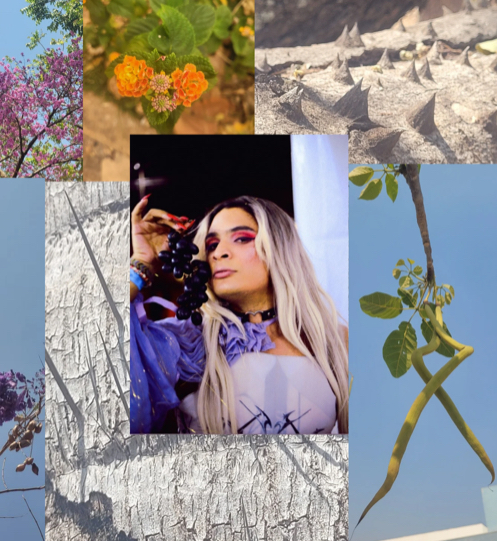

Sobre o CapiClima
O Coletivo CapiClima, formado por juventudes de Mato Grosso, atua na promoção da justiça climática e dos direitos humanos,
com enfoque interseccional em raça, classe, gênero, território e juventude. Criado em 24 de abril de 2024, após o Seminário
Nacional de Juventude, Meio Ambiente e Justiça Climática, o coletivo busca ampliar a participação política das juventudes diante
da crise climática.
Suas ações incluem formações, mobilização comunitária, advocacy, incidência política e articulação em redes. Em poucos meses,
participou de cinco missões regionais e representou o bioma Pantanal como delegação oficial na etapa nacional do Seminário, em
Brasília, reforçando o compromisso com a reconstrução do Plano Nacional de Juventude e Meio Ambiente.
O CapiClima tem como propósito amplificar a voz das juventudes e lutar por um futuro justo, sustentável e solidário, defendendo
especialmente territórios historicamente negligenciados e unindo justiça ambiental à justiça social.
Nossa Missão
Promover a justiça climática e os direitos humanos, com enfoque interseccional em raça, classe, gênero, território e juventude,
através de ações de formação, mobilização comunitária, advocacy, incidência política e articulação em redes.
Nossa Visão
Um mundo onde todas as juventudes têm voz e vez na construção de políticas públicas que garantam justiça climática e social.
Nossos Valores
- Justiça Climática
- Direitos Humanos
- Interseccionalidade
- Participação Política
- Sustentabilidade
- Solidariedade
Conheça nossa equipe

Gregório Teófilo
Coordenador de Incidência e Representação
engenheiro sanitarista e ambiental, pesquisador em segurança hídrica e alimentar,
mobilizador de juventudes pela justiça socioambiental.

Augusta Cesária
Coordenadora de Mobilização e Engajamento
pedagoga e graduanda em Filosofia, mulher travesti, militante das pautas de
educação, diversidade e justiça social.

Vinícius Sanches
Coordenador de Formação e Planejamento
ativista dos direitos humanos, graduando em Serviço Social, pesquisador em saúde
mental, justiça ambiental e direitos da infância e juventude.

Eduarda Silva
Coordenadora de Comunicação
estudante de Jornalismo, pesquisadora em sustentabilidade e mudanças climáticas, com foco
em comunicação popular e engajamento digital.

Vinicius Costa
Coordenador de Captação de Recursos
Graduando em Administração, militante estudantil, pesquisador em justiça climática e
representante internacional em fóruns ambientais.

Lucas Silva
Coordenador de Parcerias
Técnico em Informática (IFMT), Graduando em Sistemas para Internet (IFMT), consultor e social media, com atuação em juventude,
educação, meio ambiente e direitos LGBTQIAPN+.